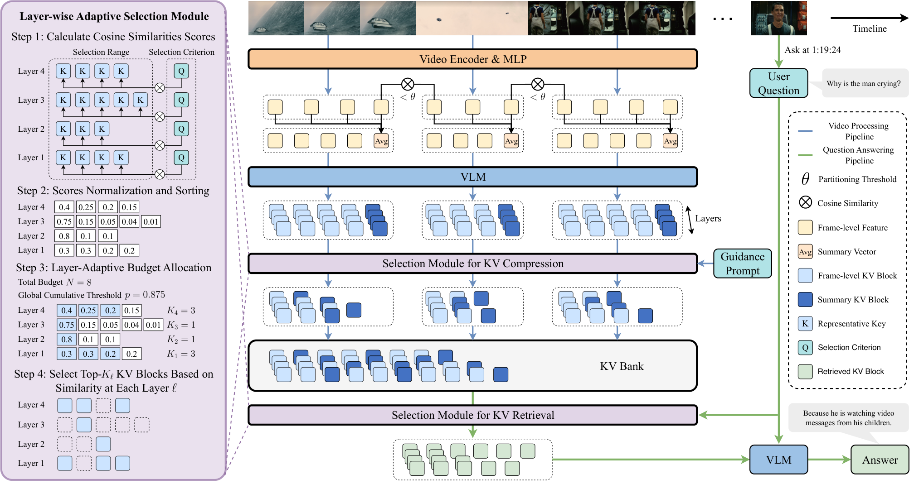
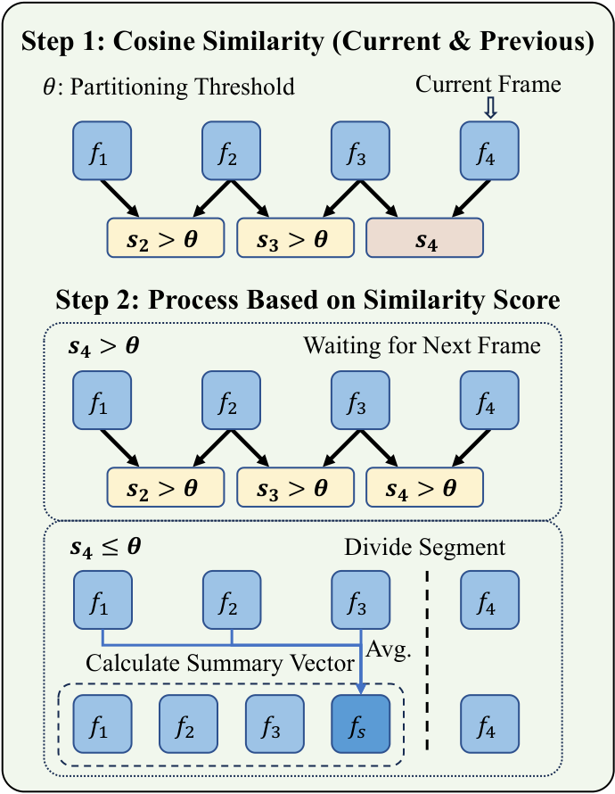

论文信息
| 作者 | Yilong Chen、Xiang Bai、Zhibin Wang、Chengyu Bai、Yuhan Dai、Ming Lu、Shanghang Zhang |
|---|---|
| 机构 | 北京大学多媒体信息处理国家重点实验室；淘宝天猫集团等 |
| 发表 | AAAI 2026（arXiv:2511.07278） |
| 一句话 | 以语义事件段作为流式视频 KV 压缩、存储和检索的单位，让未知未来问题的 Video-LLM 仍能在固定预算下保留可回答的历史证据。 |
1. 核心摘要
Streaming Video Question Answering 的难点不是把一段完整视频送入模型，而是在视频持续到来、用户问题尚未知晓时，持续构建一个不会无限增长的视觉历史。ReKV 一类方案可以在提问后找回历史 KV，但若先把所有帧 KV 都保留，存储本身仍会随视频长度增长；若在固定时间窗口内均匀切分，又可能把同一事件截断，从而损坏后续检索的语义单元。
StreamKV 提出训练无关的三段式方案：先依相邻帧表征相似度把视频划为语义段，并为每段保存 summary vector；随后用不依赖用户问题的 guidance prompt 在段内压缩 frame-level KV，同时把 summary KV 显式保留；用户提问后，再用同一个逐层自适应选择模块从 KV Bank 检索相关段。论文在 StreamingBench 上以 LLaVA-OneVision-Qwen2-7B-OV 为基础模型，报告在丢弃 60% KV 时 Clips Summarization 达 87.7%，比 ReKV 高 9.1 个百分点。
2. 研究动机
流式视频的三个矛盾
离线 VideoQA 可以等视频结束、问题给出后再处理完整上下文；StreamingVQA 不具备这两个前提。系统必须持续编码，长期保留可能被未来问题需要的视觉信息，并在问题到来时低延迟回答。完整 KV Bank 保真但会不断膨胀；只保留短窗口则遗忘早期证据；将所有帧均匀压缩又没有利用事件边界，因此经常混合多个无关语义阶段。
为什么固定窗口不是合适的记忆单位
同一个“取物—放置—离开”的操作，关键转折处的视觉语义变化远大于连续运动中的帧间差异。均匀时间窗口可能将转折切在两段之间，也可能把很长的静态片段与一次状态变化同等对待。作者的观察是，压缩和检索应以语义连续的 segment 为基本单元；这样段的 summary 可以成为不易丢失的全局锚点，段内帧 KV 再承担细节证据。
压缩阶段不能依赖未来用户问题
流式编码时具体提问未知，且系统需要支持多轮问答，不能将某个问题当作唯一过滤器。StreamKV 以 guidance prompt 描述一般性的视觉语义要素：显著实体、关键动作/事件、时间因果关系、场景或叙事变化，以及重要事实细节。它由此选择“对未来一般问题可能有用”的 KV；真正的问题相关性则留给查询时的第二次检索。
3. 方法论

Figure 2：视频按语义段写入 KV Bank，段内帧级 KV 先压缩；问题到来后，逐层选择相关 KV 生成答案。
3.1 总体流程：segment → KV Bank → question-conditioned retrieval
输入的视频流先按固定频率采帧，经视觉编码器得到每帧 patch 表征。StreamKV 以相邻帧的视觉相似度定位边界，形成长度受控的语义段；每段含一组 frame feature 和一个逐位置平均的 summary vector。段被顺序送入带局部历史窗口的 Video-LLM，产生每层的 frame-level KV blocks 与一个 summary KV block。frame-level blocks 先被压缩，summary block 始终保留，二者共同写入 KV Bank。用户问题到达时，问题 token 不重新读取原视频，而是在每一层从 KV Bank 选择相关 blocks 并作为 attention context 生成答案。
3.2 语义分段与段长控制
令相邻帧的视觉表征为 \(f_{t-1}\)、\(f_t\)，作者计算余弦相似度 \(s_t=\frac{f_{t-1}\cdot f_t}{\lVert f_{t-1}\rVert\lVert f_t\rVert}\)。低相似度表示显著视觉改变，作为新 segment 的候选边界。为避免由短暂抖动得到过短的段，作者在边界附近设置排除窗口 \(m\)；为避免长期静态视频产生过长段，当长度超过 \(M\) 时，合并最相似的相邻帧对。因此每段长度被限制在 \([m,M]\)，实验中使用最小 4 帧、最大 64 帧。

Figure 1(a)：相邻帧特征相似度较低处形成段边界，段长由最小与最大长度约束。
3.3 summary vector：给每个事件段留下不可压缩的语义锚点
对第 \(i\) 个段 \(S^i=[f_t^i]_{t=1}^{T_i}\)，StreamKV 在每个空间位置对帧特征求平均，得到 \(f_s^i=\frac{1}{T_i}\sum_{t=1}^{T_i}f_t^i\)。它和原帧一起编码，生成 summary KV block。段内普通帧 KV 可以被丢弃，但 summary KV 总是写入 Bank；这使每个段即使在激进压缩后仍保留一条可用于检索的段级表征。对于 VLA 历史记忆，这很接近“事件卡片摘要永远保留、细节按预算淘汰”的做法。
3.4 Unified Layer-Adaptive KV Selection：一个模块服务压缩和检索
每个 frame-level KV block 先把所有 patch key 平均为代表向量 \(r_{m}^{i}\)。在第 \(l\) 层，模块对候选代表向量与选择条件向量 \(c^{l}\) 计算余弦相似度，再在全层总预算 \(N\) 下选择每层的 Top-K。区别于每层均分预算，作者先对层内相似度 softmax 归一化并排序；随后二分搜索全局累计阈值 \(p\)，为每一层找到最短前缀 \(K^{l}\)，使所有层的保留数之和等于 \(N\)。信息分布更集中、前缀累计更快的层因此获得不同于其他层的预算。
3.5 先用 guidance prompt 压缩，再用 question 检索
压缩时，选择条件 \(c^{l}\) 是 guidance prompt 各 token 的层内 query 向量均值。它寻找的是段内代表“人、物、地点、关键动作、时序因果、场景变化和事实细节”的 KV；每段的总预算为 \(\operatorname{ceil}((1 - \theta )T^{i}) \times L\)，其中 \(\theta\) 是压缩比例、\(L\) 是层数。问答时算法不变，但把选择条件换成用户问题向量、候选范围扩至整个 KV Bank，并以每层平均检索 block 数设定新预算。这样同一套 SelectKV 分别承担无问题时的写入压缩和有问题时的读取检索。
3.6 局部 RoPE 与检索后位置重编号
长序列中相距很远的 RoPE 位置会削弱 attention。视频编码阶段，RoPE 只在局部滑窗内编号；问答阶段，检索出的 KV 被视为连续 token，并以相对位置重设 RoPE。这不是额外记忆内容，而是让跨长时间检索后的 KV 在 attention 中仍保持可用的几何关系。
4. 实验与结果
设置。论文使用 LLaVA-OneVision-Qwen2-7B-OV，在 96GB NVIDIA H20、FP16 下评估。视频采样率为 0.5 FPS，局部窗口 15K，KV 检索平均取 8 个 frame blocks。主基准为 StreamingBench，覆盖 Real-Time Visual Understanding、Omni-Source Understanding 与 Contextual Understanding 共 18 个子任务。
| 比较 | 设置 / 指标 | 结果 | 解读 |
|---|---|---|---|
| 主结果 | Clips Summarization，压缩 60% | StreamKV 87.7%；比 ReKV 高 9.1 个百分点，比基础 LLaVA-OneVision 高 11.7 个百分点 | 语义段与 summary 能在大幅丢弃 KV 时保留段级内容。 |
| 压缩消融 | StreamingBench 总分，丢弃 60% KV | Semantic segment 58.89；uniform segment 56.33 | 按边界分段优于等长切分，差 2.56 分。 |
| summary 消融 | StreamingBench 总分，丢弃 90% KV | 有 summary 56.72；无 summary 53.85 | 极低预算下，段摘要仍提供稳定锚点。 |
| 逐层选择消融 | 丢弃 60% KV | 压缩/检索均自适应为 58.89；均匀/均匀为 57.83 | 压缩和检索两侧都利用层间差异才取得最佳结果。 |
论文还报告，在 60% 压缩下增加检索帧数反而会降低 StreamKV 表现：更精准的 KV retrieval 使较少帧已足够，继续加入帧会带来无关上下文并增加问答计算。这个结论对 VLA 很实用：事件记忆不应以“检索越多越安全”为默认，而应评估冗余证据对当前控制的干扰。
5. 优势与局限
| 优势 | 局限 / VLA 迁移注意点 |
|---|---|
|
|
6. 总结
StreamKV 把长视频 KV 管理改写为“先定义事件段，再分别保存摘要和细节”的问题。语义分段负责确定历史的自然边界，summary vector 保证每段在压缩后仍可被识别，layer-adaptive selection 则决定固定预算应落在哪些层和哪些帧。相比只在完整 KV Bank 上检索，它更适合持续增长的视频流。
对 VLA 历史关键事件检测而言，最值得迁移的是 segment boundary 与 KV Bank 的耦合：motion + appearance + robot state 可以替换单一视觉相似度来划分操作事件；确认事件的 summary KV 长期保存，细节 KV 依据当前预算和任务相关性淘汰；检索端再用当前指令、状态和预测动作作为 query。这样，关键事件检测就不只是另一个监督头，而成为决定 KV commit / compress / retrieve 的控制器。